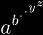
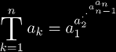
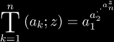
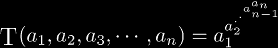
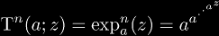
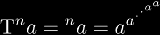
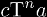

Informally, a nested exponential is an expression of the form 
Nested exponentials have also be called: towers, infinite exponentials, heterogeneous towers, exponential towers, n-ary exponentials, and n-ary towers. Here, we use the terms nested exponential and n-ary tower synonymously.
There are five parts to N-ary tower notation:
|  | (Barrow's notation) for nested exponentials |
|  | (Barrow-Shell notation) for nested exponential functions |
|  | (Brunson's notation) for arbitrary nested exponentials |
|  | (similar to Galidakis' notation) for iterated exponentials |
|  | (similar to Maurer's notation) for tetration |
for more notations, see the Tetration Definitions page.
One thing to note is that the last two notations can be implied by the first two, by assuming that k = 1 implicitly. So while it may seem to duplicate what can be expressed with more popular notations, it is much more consistent with tower notation as a whole. Also, tower notation does not have any ambiguity when compared to Maurer's left-superscript notation, since any multiple like  is clearly delimited by the T (Greek tau).
|
Copyright © 2010 Andrew Robbins ( |
|